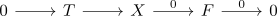

essential image of a torsion pair
Proposition
Let $(\mathcal{T}, \mathcal{F}) \subseteq \mathcal{A}$ be a torsion pair Suppose $X\in \mathcal{A}$. TFAE:
- $\mathrm{Hom}_{\mathcal{A}}(X,F) = 0$ for all $F \in \mathcal{F}$
- $X$ lies in the essential image of the inclusion $\mathcal{T} \subseteq \mathcal{A}$
Analogously TFAE:
- $\mathrm{Hom}_{\mathcal{A}}(T,X) = 0$ for all $T \in \mathcal{T}$
- $X$ lies in the essential image of the inclusion $\mathcal{F} \subseteq \mathcal{A}$
Proof
1) $\implies$ 2)
follows from the existence of the short exact sequence

where $F = 0$ since it is sandwhiched by zero objects. Hence $T \simeq X$ are isomorphic
2) $\implies$ 1)
definition